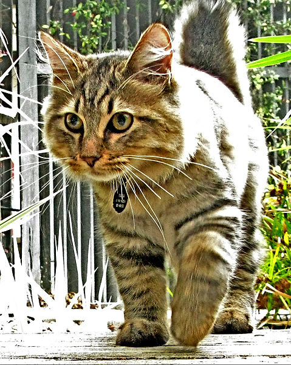

The American Bobtail is an uncommon breed of domestic cat which was developed in the late 1960s.[1] It is most notable for its stubby "bobbed" tail about one-third to one-half the length of a normal cat's tail. This is the result of a cat body type genetic mutation affecting the tail development, similar to that of a Manx cat.[1] The breed is not related to the Japanese Bobtail despite the similar name and physical type—the breeding programs are entirely unrelated, and the genetic mutation causing the bobbed tail are known to be different because the mutation causing the American Bobtail's tail is dominant, whereas the Japanese Bobtail tail mutation is recessive.[2]
American Bobtails are a very sturdy breed, with both short- and long-haired coats. Their coat is shaggy rather than dense or fluffy. They can have any color of eyes and coat, with a strong emphasis on the "wild" tabby appearance in show animals.[1]
References:
This article uses material from the Wikipedia article ”American Bobtail", which is released under the Creative Commons Attribution-Share-Alike License 3.0.
Picture: By torbakhopper (http://www.flickr.com/photos/gazeronly/7164563744/) [CC BY 2.0 (http://creativecommons.org/licenses/by/2.0)], via Wikimedia Commons